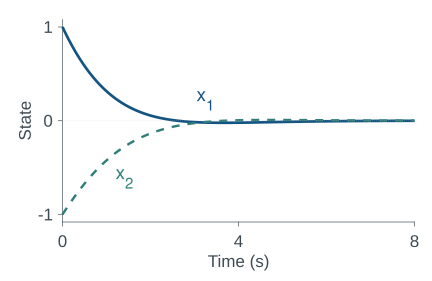
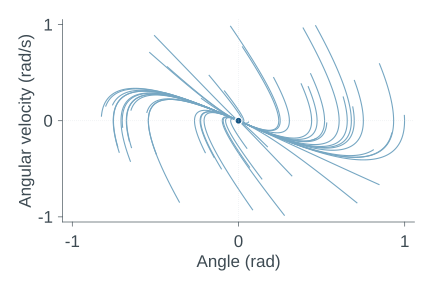
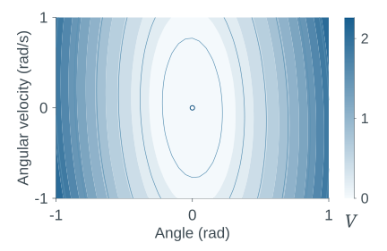
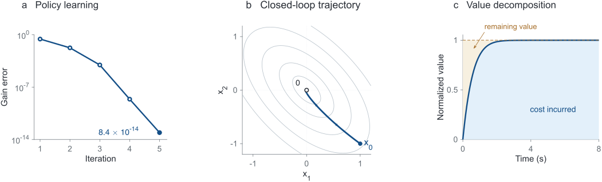

Linear quadraticIntegral PI

Learn a feedback law.
A two-state problem with an analytic LQR solution makes each policy-evaluation round and closed-loop check inspectable.
Recorded result5 policy-evaluation rounds
Run the baselineA reference for learning-based control
From equations to
closed-loop experiments.
Study, reproduce and extend adaptive dynamic programming in MATLAB. Each method connects its mathematical assumptions to explicit code, recorded experiments and numerical checks.
ADP-MATLAB 0.5.0 · MIT · Release & license status
An analytic baseline, a learned dynamics model, and a neural value function.

A two-state problem with an analytic LQR solution makes each policy-evaluation round and closed-loop check inspectable.
Recorded result5 policy-evaluation rounds
Run the baseline
Identify a Koopman generator, improve the policy, then compare it with policy iteration using the true dynamics.
Recorded experimentLearned policy · all 50 initial states
Normalized pendulum

Train a physics-informed network with horizon continuation, then inspect its HJB residual and closed-loop behavior.
Recorded experimentNeural V(x, 0) · final stage T = 4 s
Reduced training
Figures use saved MATLAB experiments. Each example has its own assumptions and numerical settings. Provenance · Editable figures & data
A traceable experiment
Start with a method’s problem and equation map. Run its native implementation, then inspect the saved configuration, trajectory and diagnostics.
The shared entry point selects a method. Each implementation retains the assumptions, dimensions and numerical choices its mathematics requires.
Read the implementation guideThe integral-PI baseline
adp.models.doubleIntegratoradp.learn.integralPIadp.sim.rolloutresult.config · result.metricsresult.evaluation · runDirThe analytic LQR solution is an independent comparison; it is not supplied to the learner.
8 runnable entries, including 7 paper implementations. Expand a row for the command, dependencies and recorded scope.
| Method / source | Problem & learning | Example | Run instructions |
|---|---|---|---|
| Integral policy iterationReference baseline | CT linear quadratic · known B | Double integrator | |
Analytic LQR comparator; two-state example. The saved baseline reaches the analytic LQR gain in five policy-evaluation rounds; the final gain error is 8.37e-14.
Entry source (.m)Equation notes (.md)Experiment & checks (.json) | |||
| Koopman generator + PIL4DC 2025 | CT nonlinear · identified generator | Normalized pendulum | |
Normalized pendulum variant; not every paper table. Fifty recorded closed-loop trajectories have a maximum terminal state norm of 1.23e-3. Average cumulative cost across the 50 initial states is compared with true-model PI: the maximum absolute difference over 0–10 s is 3.15e-5.
Entry source (.m)Equation notes (.md)Experiment & checks (.md)Original paper | |||
| Mean-field LQGAutomatica 2025 | Stochastic CT · two-gain PI | Finite population LQG | |
Finite-sample social optimization; low-sample failures retained. The documented 4,000-path run reports gain errors of approximately 0.53% and 0.85%. Low-sample failures and independent training repeats are retained.
The default example uses 100 training paths. The saved 0.53% / 0.85% gain errors come from a separate 4,000-path record. This existing procedure pools batches under a common probe and fits at 100, 400, 1,000 and 4,000 paths. A small-sample fit may stop it before 4,000. Exact replay of the historical numbers still needs the archived configuration and data; see the run guide. Entry source (.m)Equation notes (.md)Experiment & checks (.md)Run guide (.md)Original paper | |||
| Off-policy Q-learningIEEE TAC 2023 | DT LQR · matrix Bellman equation | Data-based LQR | |
Data-based LQR; explicit MIMO initialization variant. The implementation documents a data-based stabilizing initialization, a discrete LQR comparison, and an explicit MIMO initialization variant. The linked record contains local checks.
Entry source (.m)Equation notes (.md)Experiment & checks (.json)Original paper | |||
| Infinite-horizon HJB PINNIJRNC 2025 | Neural HJB · horizon continuation | Scalar LQR & pendulum | |
Reduced LQR/pendulum training; corrected quartic cost identified. The saved reduced pendulum experiment completes four closed-loop evaluations at each continuation horizon, from 1 through 4. The figure shows the trained value on the common grid at horizon 4.
Smoke trains scalar LQR at horizon 1 and pendulum at horizons 1–2 for 10 updates each, plus two 12-update prefix checks. The horizon-4 figure uses reduced training: 2,000 LQR updates and 3,000 per pendulum horizon, 1–4. This is the smaller network experiment, not the full paper schedule. Entry source (.m)Equation notes (.md)Experiment & checks (.json)Run guide (.md)Original paper | |||
| Safe epigraph PINNICML 2025 | Epigraph HJB · neural value | Constrained boat navigation | |
Boat example; collision and budget violations remain. Of the same 64 candidates, reduced training executes 64: 19 collisions, 47 budget violations. The author checkpoint executes 63: 1 collision, 9 budget violations. Events may overlap.
This trains and evaluates a new MATLAB network. The run guide below separately explains author-checkpoint inference using external converted weights and an existing result.mat with the comparison inputs. Entry source (.m)Equation notes (.md)Experiment & checks (.md)Run guide (.md)Original paper | |||
| Robust Koopman PIPreprint 2026 | Lifted bilinear · robust PI | Lifted bilinear control | |
Held-out error bound fails on 25.55% of points. The fitted error bound fails on 25.55% of held-out points in the preserved evaluation.
Entry source (.m)Equation notes (.md)Experiment & checks (.md)Original paper | |||
| Bias-policy iterationAutomatica 2026 | Unknown CT nonlinear · fixed data | Pendulum & two-link arm | |
Pendulum/arm variants; arm cost is 8.84% above local LQR. The recorded arm variant stabilizes, with cost 8.84% above the local LQR comparison.
The displayed 8.84% cost gap belongs to this local-multistart arm variant over five seconds. Its LQR comparison requires Control System Toolbox. Entry source (.m)Equation notes (.md)Experiment & checks (.md)Run guide (.md)Original paper | |||
CT: continuous time. DT: discrete time. Algorithmic assumptions and numerical variants are documented with each implementation.
Getting started
Download the v0.5.0 source or clone the GitHub repository. Open its root folder in MATLAB and run the commands alongside.
The baseline uses base MATLAB with the standard JVM. Expect a learned gain close to [1, √3].
check_environment();
% List available methods
demo_reproductions();
[result, runDir] = ...
demo_reproductions( ...
'baseline');
result.learning.K1.0000 1.7321Inspect result.evaluation for the trajectory and result.metrics for the numerical checks. runDir points to the saved experiment.
Local tests, recorded experiments and paper comparisons answer different questions. Keep the settings with the result.
102 local checks passedMATLAB R2025b Update 6 · macOS Apple silicon
Tests include two single Adam updates. Full training and paper-figure reproduction are recorded separately. Validation record

Double integrator, Q = I, R = 1, x₀ = [1, −1]ᵀ. Contours use the analytic LQR value. Final gain error: 8.37 × 10−14; eight-second cost: 1.4641008. PDF · Editable figure & data
These results describe specific numerical variants; the settings differ across methods.
| Experiment | Observed result |
|---|---|
| Safe epigraph PINN | Of the same 64 candidates, reduced training executes 64: 19 collisions, 47 budget violations. The author checkpoint executes 63: 1 collision, 9 budget violations. Events may overlap. |
| Robust Koopman PI | The fitted error bound fails on 25.55% of held-out points. |
| Bias-PI arm variant | The recorded closed loop stabilizes; cost is 8.84% above the local LQR comparison. |
Build on the reference
Contribute a mathematical problem, an equation map, an explicit MATLAB implementation and an experiment with an independent comparison. Preserve the configuration and historical results.
The repository includes templates and six optional research skills. Current priorities include FxT-CL-ACI, constrained control and an offline MATLAB/Simulink robot example.
Citation & release
Cite the original paper when using an implementation, and include the ADP-MATLAB version or commit.
Software citation metadataInitial references: Frank Lewis’s software, FxT-CL-ACI, and ADP algorithms. Attribution details